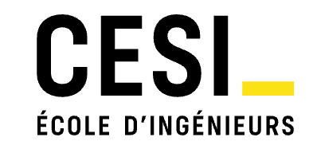
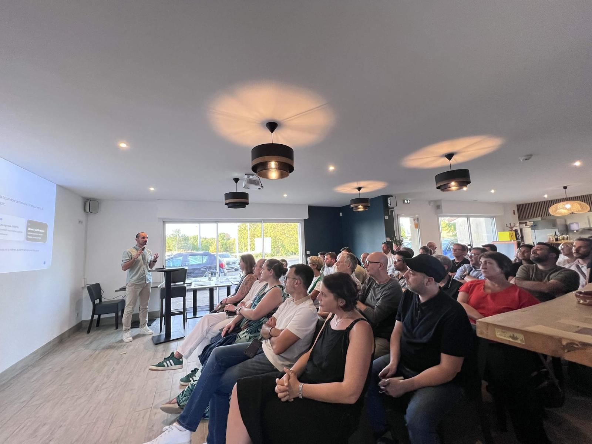
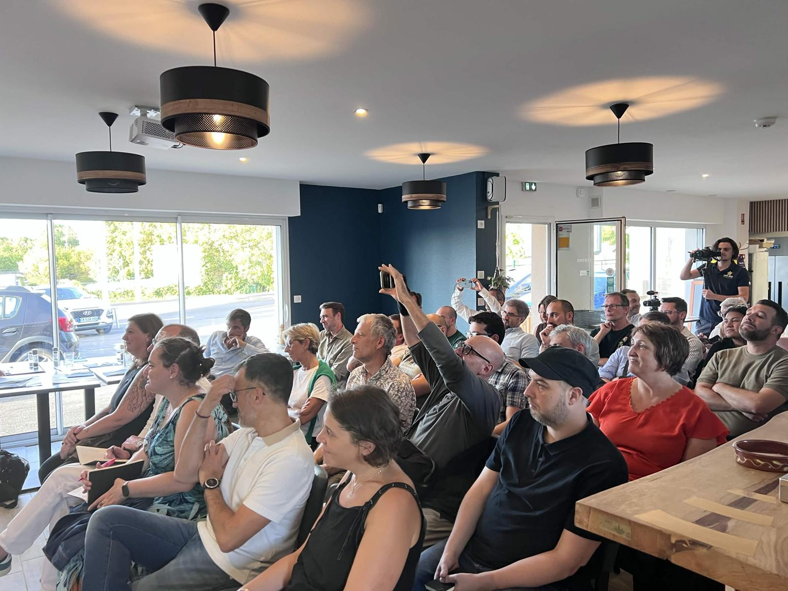

IA en entreprise : moins de promesses, plus de résultats.
Davy Foulatier · Korum
Prochain rendez-vous · édition n°16

📍 135, Boulevard Salvador Allende, 16340 L’ISLE D’ESPAGNAC — itinéraire
Le principe
Presque chaque mois, des professionnels du numérique de Charente se retrouvent un jeudi soir, le plus souvent à Angoulême, pour se raconter leurs projets. Trois personnes partagent ce qu'elles ont vraiment fait — avec l'IA, la cybersécurité, la data, le design ou les outils du quotidien — puis on en discute, un verre à la main.
Pas d'écran entre nous, jamais de webinaire. On se voit, on se parle, et on continue après.
Pas de pitch commercial : ce qui a marché, ce qui a coincé, et ce qu'on referait autrement.
15 à 20 minutes par intervention, chrono en main. Juste le temps de dire l'essentiel.
Chaque présentation se termine par vos questions. Le cocktail fait le reste.
Trois sujets par soirée, sans thème imposé : on passe volontiers de la blockchain à la photo argentique.
Un lieu différent à chaque fois — tiers-lieu, école, restaurant —, surtout à Angoulême et parfois ailleurs en Charente.




Qui vient ?
Pas besoin d'être expert : il suffit d'être curieux. Les soirées sont ouvertes à tous.
Les soirées


Aucune soirée ne correspond à cette recherche.
Questions fréquentes
Non, elles sont gratuites. L'inscription est demandée pour prévoir la salle et le cocktail, offert par l'hôte ou le sponsor de la soirée.
Pas du tout. Les intervenants parlent concret et chaque présentation se termine par les questions de la salle. Dirigeants, salariés, indépendants, étudiants : tout le monde est bienvenu.
Via le formulaire d'inscription en haut de cette page. Vous recevez aussitôt une invitation à ajouter à votre agenda, puis les invitations des soirées suivantes par e-mail.
Le lieu change à chaque fois : tiers-lieux, écoles, restaurants, entreprises… La plupart du temps à Angoulême et dans son agglomération, parfois ailleurs en Charente. L'adresse est indiquée dans l'invitation et sur ce site.
Écrivez-nous en décrivant votre retour d'expérience en quelques lignes. Le format : 15 à 20 minutes, du concret, puis les questions de la salle.
Un petit groupe de bénévoles, sans association ni cotisation. Les soirées vivent grâce aux hôtes qui prêtent leur salle et aux sponsors qui offrent le cocktail.
Une organisation informelle
Les RDV sont portés par un petit groupe de bénévoles qui s'agrandit au fil des soirées : Laure Raymond, Frédéric Bourcier, Clément Germon, Denis Oblin et Sonia Bilon. Pas de structure juridique, un fonctionnement autofinancé grâce aux hôtes et aux sponsors… et une organisation de plus en plus automatisée : invitations, inscriptions, agenda et ce site sont alimentés depuis la même base, sans ressaisie.
Entreprises, écoles, institutions : vous prêtez une salle ou offrez le cocktail, et votre logo accompagne l'invitation et la soirée.
Nous écrireVous avez un retour d'expérience à partager en 15–20 minutes ? Réussite, échec instructif, outil, méthode : tout ce qui vient du terrain nous intéresse.
Proposer un sujetRécaps des soirées, annonces des prochains intervenants, photos : tout passe par notre page LinkedIn.
Suivre la page LinkedInInscrivez-vous à une soirée : vous recevrez ensuite les invitations des suivantes par e-mail.
S'inscrireIls ont accueilli ou soutenu une soirée
Mediaschool
Webperfect
Sooiz
syst-a.org